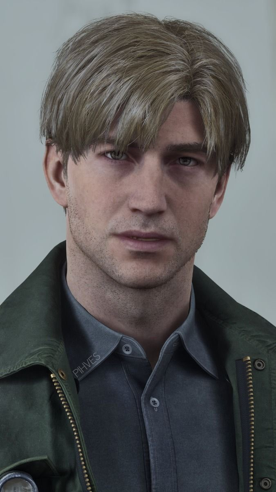
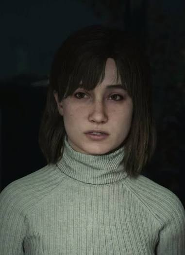
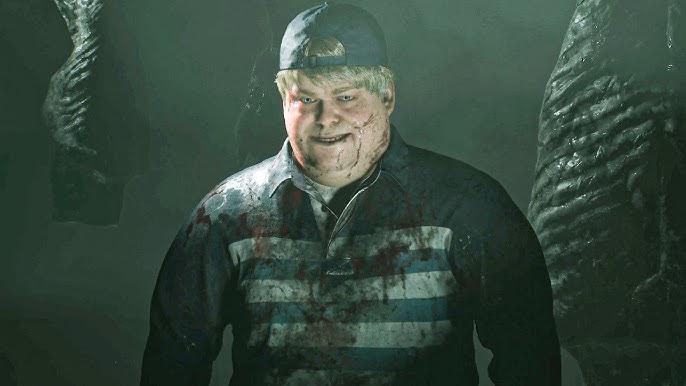
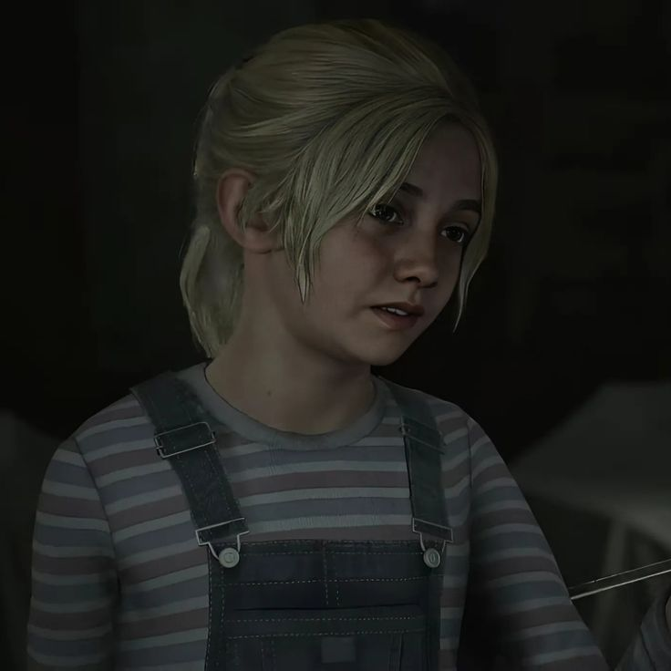

James Sunderland arrives in Silent Hill after receiving
a letter from his deceased wife, Mary. What begins as
a search becomes a journey through memory, guilt, fear
and the strange manifestations of the town.
This is a non-commercial fan project.
SILENT HILL 2 and its characters belong to their
respective rights holders.
Every person James encounters carries a different
reflection of the town.

01
PROTAGONIST
JAMES SUNDERLAND
A widower who returns to Silent Hill after receiving
a letter apparently written by his deceased wife,
Mary.
James's journey is built around memory, guilt,
grief and the meaning he assigns to the town
and the people he encounters.
02
MYSTERY
MARIA
A mysterious woman James meets in Silent Hill
who bears an uncanny resemblance to Mary.
Maria's presence is closely tied to James's
memories, desires and unresolved emotions.
03
THE LETTER
MARY SHEPHERD-SUNDERLAND
James's late wife, whose memory and mysterious
letter draw him back to Silent Hill.
Mary's memory forms one of the central emotional
forces behind James's journey.

04
LOST SOUL
ANGELA OROSCO
A troubled young woman searching Silent Hill
for her mother while carrying painful memories
of her own.
Angela's story mirrors the game's themes of
trauma, guilt, abuse and distorted perception.

05
THE OUTCAST
EDDIE DOMBROWSKI
A lonely man James encounters in Silent Hill
whose increasingly unstable behavior reveals
another side of the town's influence.
Eddie's story explores humiliation, resentment,
violence and the way people justify their actions.

06
THE CHILD
LAURA
A young girl searching for Mary who seems to
perceive Silent Hill very differently from James.
Laura's perspective creates an important contrast
with James's distorted experience of the town.
“
People are always looking for a reason to hurt someone.
— THROUGH THE FOG
03 /
CREATURES / BESTIARY
They walk the streets, corridors and nightmares
of Silent Hill.
Manifestations of guilt, fear and something far deeper.
SPECIMEN
01
FIELD OBSERVATION
ARCHIVE / SOUTH VALE
HOSTILE ENTITY
CLASS / UNKNOWN
LYING FIGURE
"A thing trapped within itself."
A disturbing manifestation encountered
throughout the streets and corridors of Silent Hill.
Its restrained appearance hides a dangerous and
unpredictable creature.
◆
♟
PHYSICAL ATTRIBUTES
Its body is enclosed in a tight,
skin-like covering, creating a rigid
and unsettling humanoid silhouette.
⚔
ABILITIES
It crawls and lunges toward James
and can project a corrosive substance
from its body.
◉
BEHAVIOR
Lying Figures often remain low to the
ground and attack from a distance.
Their movements can be difficult to read
in the fog.
♟
JAMES / SYMBOLISM
Its restrained form can be read as imagery
of sickness, confinement and suppressed
suffering.
▧
STORY / CONTEXT
Lying Figures are among the first creatures
James encounters, establishing the connection
between Silent Hill's monsters and psychological
imagery.
╱
WEAPON / COMBAT
Maintain distance whenever possible.
Ranged attacks are safer, while close combat
requires careful timing around its attacks.
01 / 06
04 / SOUTH VALE
THE TOWN REMEMBERS.
A place where familiar streets become strange and every
path seems to lead deeper into the fog.
04 / MAP ARCHIVE
FIND YOUR WAY THROUGH.
Select an area to examine its maps.
Navigate between floors and sections using the
controls inside the archive.
AREA / SOUTH VALE
SOUTH VALE — MAIN MAP
05 / ARCHIVE OF MEMORY
THE STORY BEHIND THE FOG.
Silent Hill is not merely a place James visits.
It is a landscape of memory, guilt, punishment,
grief and unresolved suffering.
⚠ SPOILERS
This archive contains major story revelations,
character histories, monster symbolism and
ending-related information.
01
BEFORE JAMES
A TOWN WITH A MEMORY OF ITS OWN.
The history of Silent Hill stretches back long before
James Sunderland ever enters the town. The land around
Toluca Lake carried a spiritual significance long before
it became the tourist destination that modern visitors
recognize. Over time, the town accumulated stories,
rituals, violence and suffering.
Places of punishment, imprisonment and death became part
of its physical history. The land therefore became
associated with ideas of judgment, suffering and the
boundary between the living and the dead.
THE TOWN
Silent Hill's supernatural influence is deliberately
mysterious. The game never gives a simple rulebook
explaining exactly how it works.
This ambiguity is important. Silent Hill 2 is less
interested in explaining the supernatural than in showing
how the town becomes different for different people.
What James sees is deeply connected to James.
02
THE LETTER
THE WOMAN IN THE PHOTOGRAPH.
James Sunderland was once married to Mary.
Their relationship was deeply important to him,
but Mary's serious illness changed both of their lives.
Mary became increasingly isolated by her condition.
Her illness created fear, frustration and emotional
distance between the couple. James loved her, but his
feelings became complicated by exhaustion, resentment,
helplessness and despair.
Eventually James reached a point where he could no longer
emotionally endure the situation in the way he had before.
That moment became the central wound around which the entire
story of Silent Hill 2 is constructed.
THE TRUTH
Mary did not die three years before the game begins.
She died shortly before James arrives in Silent Hill.
James himself was responsible for her death.
After killing Mary, James psychologically separated himself
from the memory of what he had done. His mind reshaped the
event until he could believe another version of his story:
that Mary had already been dead for years and that she had
somehow written to him from Silent Hill.
03
SOUTH VALE
HE RETURNS TO THE PLACE THEY SHARED.
James arrives in Silent Hill after receiving a letter
apparently written by Mary, telling him that she is waiting
for him in their special place.
The town is covered in fog and appears strangely empty.
Roads are blocked, buildings are abandoned and ordinary
landmarks feel distorted.
James nevertheless continues forward because he believes
Mary may still be alive.
Almost immediately, however, the town begins confronting
him with images that resist his version of reality.
His journey becomes less like a rescue mission and more
like an investigation into his own memory.
04
A CHILD WHO REMEMBERS
LAURA
Laura is a young girl who repeatedly crosses paths with
James during his journey.
Unlike James, Laura does not appear to experience the town
in the same way. She can move through places where James sees
monsters and other manifestations, yet she does not seem to
perceive the same supernatural environment.
Laura knew Mary and cared deeply about her.
Her relationship with Mary gives James access to a reality
that exists outside his distorted memory.
LAURA'S IMPORTANCE
Laura is one of the clearest reminders that Silent Hill 2
is not simply a story about a haunted town.
James is forced to recognize that other people remember Mary
differently from how he has chosen to remember her.
05
TRAUMA
ANGELA OROSCO
Angela arrives in Silent Hill carrying a history of severe
trauma. She is searching for her mother while struggling
with memories of abuse and the consequences of what happened
within her family.
Angela's Silent Hill is intensely personal. Fire, heat,
oppressive environments and distorted spaces become associated
with her memories.
Her experiences demonstrate one of the game's most important
ideas:
THE TOWN DOES NOT SHOW EVERYONE THE SAME HELL.
Angela's manifestations are not simply James's story seen
from another perspective. They suggest that Silent Hill
becomes a psychological mirror, reflecting the emotional
burden carried by whoever enters it.
06
PARANOIA
EDDIE DOMBROWSKI
Eddie appears to James as another lost person wandering
through the town. He is frightened, defensive and deeply
insecure.
Eddie claims that people have always laughed at him and
treated him as though he were worthless. He initially
presents himself as someone who has been pushed around by
the world.
As James encounters him again, Eddie's mental state becomes
increasingly unstable.
He eventually begins to justify violence against other
people, convincing himself that he is acting because the
world is cruel to him.
EDDIE'S MIRROR
Eddie demonstrates what can happen when suffering becomes
an excuse rather than something confronted.
07
THE IMPOSSIBLE WOMAN
MARIA
James encounters Maria in Rosewater Park.
She looks remarkably similar to Mary, yet her personality,
appearance and manner are different.
Maria is more confident and openly sensual. She knows things
about James that she should not know and repeatedly occupies
the unstable space between being an individual person and
being an echo of Mary.
James becomes emotionally attached to her, even though her
existence forces him to confront an uncomfortable question:
does he love Maria herself, or does he love the possibility
that Mary could have been different?
Maria's repeated deaths are one of the central mechanisms
through which the town confronts James with his guilt.
MARIA IS NOT SIMPLY MARY 2.0.
She represents the fantasy of the woman James wanted Mary
to be, while also becoming part of his punishment.
08
MANIFESTATIONS
THE MONSTERS ARE NOT RANDOM.
The creatures of Silent Hill 2 are closely tied to the
psychological themes surrounding James and the other
characters.
The Lying Figure is associated with sickness, suffering
and physical confinement.
Bubble Head Nurses transform medical imagery into something
threatening, connecting care and illness with James's memories
of Mary's decline.
Mannequins turn the human body into fragmented and distorted
forms, connecting physical appearance, desire and
objectification.
Flesh Lips represent an extreme distortion of the body,
appearing in an environment where James himself feels
vulnerable and trapped.
These creatures should therefore be understood less as a
conventional monster roster and more as pieces of the
game's psychological vocabulary.
09
THE EXECUTIONER
PYRAMID HEAD
Pyramid Head is perhaps the most famous manifestation in
Silent Hill 2.
He carries the appearance of an executioner and is associated
with punishment, violence and judgment.
James repeatedly encounters him throughout the town.
Pyramid Head's presence is different from that of ordinary
enemies. He often feels less like a creature that James has
simply stumbled across and more like something deliberately
pursuing him.
JAMES WANTS TO BE PUNISHED.
Whether consciously or unconsciously, James carries a need
to confront the guilt created by Mary's death.
Pyramid Head's repeated violence therefore functions as a
physical representation of James's guilt and his desire for
judgment.
The Pyramid Head encounters ultimately become inseparable
from the revelation of what James has done.
10
MEMORY RESTORED
WHAT REALLY HAPPENED TO MARY.
Near the end of his journey, James finally remembers the
truth he has spent the entire game avoiding.
Mary was not waiting somewhere in Silent Hill.
The letter that brought James to the town was connected to
his own distorted memory and denial.
James had killed Mary.
He did not simply murder her and move on. He buried the
memory so deeply that he reconstructed his own history.
He arrived believing that he was searching for his dead wife,
when in reality he was being drawn toward the memory of what
he had done.
HE CAME LOOKING FOR MARY.
THE TOWN MADE HIM FIND HIMSELF.
11
PARALLEL DESCENTS
FOUR PEOPLE. FOUR DIFFERENT HELLs.
One of Silent Hill 2's strongest ideas is that the town does
not function identically for everyone.
James carries guilt over Mary's death.
Angela carries the aftermath of abuse.
Eddie carries humiliation, paranoia and resentment.
Laura carries grief for someone she genuinely loved.
Their stories overlap physically, but emotionally they are
living in completely different worlds.
JAMESGUILT / DENIAL
ANGELATRAUMA / ABUSE
EDDIEPARANOIA / VIOLENCE
LAURAGRIEF / MEMORY
12
CONCLUSIONS
WHAT HAPPENS AFTER THE TRUTH?
Silent Hill 2 does not have one universally fixed conclusion.
Its endings reflect how James relates to guilt, grief,
responsibility and the possibility of moving forward.
LEAVE
James accepts what happened and chooses to leave Silent Hill.
The ending suggests that acknowledging the truth creates the
possibility of continuing to live rather than remaining trapped
inside punishment.
IN WATER
James reaches a much darker conclusion in which his guilt and
despair overwhelm any possibility of continuing.
Toluca Lake becomes the final image of surrender.
MARIA
James chooses Maria, effectively refusing to fully confront
the emotional truth surrounding Mary and himself. The ending
carries the implication that the cycle has not truly ended.
REBIRTH
James seeks to use the town's supernatural history and old
religious practices to reverse death itself. The ending
presents an attempt to overcome death rather than accept it.
Some additional endings are influenced by specific actions
and optional discoveries. Their meaning is deliberately left
somewhat open to interpretation.
13
FINAL RECORD
THE TOWN REMEMBERS.
Silent Hill 2 is ultimately not a story about defeating
monsters or escaping a haunted town.
It is a story about what people do when the truth becomes
unbearable.
James creates a false memory because reality is too painful
to accept. Maria reflects the desire for another version of
his relationship. Pyramid Head embodies punishment.
The monsters give physical shape to emotions and memories.
Angela and Eddie demonstrate different ways of being consumed
by personal suffering.
The fog hides the town, but it also functions as a metaphor
for James's mind. The further he travels, the less distance
remains between the world around him and the truth inside him.
"THE FOG DOES NOT HIDE THE TRUTH."
IT DELAYS THE MOMENT YOU ARE READY TO SEE IT.
ARCHIVE CLOSED
THE TOWN REMEMBERS.
05 / SPOILER GUIDE
WHICH END WILL YOU REACH?
Your actions, behavior and choices influence which
conclusion awaits James.
⚠ SPOILERS AHEAD
This interactive tree is a visual guide foundation.
The simplified choices below are not a substitute for
verified remake-specific ending requirements.
05 / ENDINGS DATABASE
WHICH PATH WILL YOU TAKE?
The endings of Silent Hill 2 are divided into the three main
first-playthrough conclusions and five additional New Game+
conclusions. Select a branch to examine the actions, items,
and conditions that influence each ending.
CURRENT PATHBEGINNING
01
ENDINGS
Choose your route through Silent Hill.
The first playthrough centers on Leave, Maria and In Water.
New Game+ adds Rebirth, Stillness, Bliss, Dog and UFO.
02A
FIRST PLAYTHROUGH
Main ending selection.
The game starts with Leave = 5, Maria = 3 and
In Water = 2. Actions can add or subtract points,
and some actions can contribute to more than one
ending at once.
POINT SYSTEM
LEAVE5
MARIA3
IN WATER2
When you obtain one of the three main endings,
your next playthrough receives one additional point
toward that ending. Therefore, after earning Leave
and Maria, the next playthrough starts with two extra
points toward In Water.
ENDING 01
MAIN ENDING / FIRST PLAYTHROUGH
LEAVE
James acts as though he wants to survive and complete
his journey while not showing too much focus or
attention on Maria. This is the most likely main
ending through normal play.
DO
Examine Mary's letter and/or her photo in the
inventory 3 or more times.
Recover James's health as soon as it reaches red
and heal excessively.
Kill fewer than 150 enemies.
Choose the Snake in the coin cabinet puzzle.
Do not attack Pyramid Head in the first boss fight.
Choose Eddie's or Angela's representation in the
gallows puzzle:
II Thief, V Murderer or VI Assaulter.
Choose the rotten apple for the hotel
mirror puzzle.
Choose the rust-colored egg after the
two Pyramid Heads.
Listen to Mary's entire monologue in the long
hallway before the final boss.
AVOID OTHER ENDINGS
Do not examine Angela's knife in the inventory.
Do not repeatedly go in the wrong direction
after meeting Maria 7 or more times.
Do not let Maria take more than 50 damage.
Avoid the four West South Vale Maria interactions
and the Heaven's Night object interactions.
Do not check on Maria in the hospital room.
Do not read the Neely's Bar message above the
jukebox in the Otherworld Town.
Do not return to Maria's room in the Labyrinth.
Do not kill the three weakened monsters in the
Ruined Hotel.
SHARED POINT ACTIONS:
Examining Mary's letter/photo 3+ times gives
Leave +1 and In Water +1. The rotten apple,
rust-colored egg and Mary's full hallway monologue
also give Leave +1 and In Water +1.
ENDING 02
MAIN ENDING / FIRST PLAYTHROUGH
MARIA
James shows a lot of attention toward Maria,
develops a bond with her, and shifts his focus away
from holding onto Mary's memory.
DO
Choose the Woman in the coin cabinet puzzle.
Protect Maria from monsters and keep her damage low.
Let Maria enter the Auto Shop Garage.
Respond to Maria's dress question at the motel room.
Pass through the locked gate at Jacks Inn.
Talk to Maria in front of the Baldwin Mansion.
Interact with all Heaven's Night objects:
four posters, sexy nurse outfit, whiskey bottle
and lost-and-found bin.
Check on Maria in the hospital room four times,
including the final interaction after the first
patient bracelet and before the Rooftop Key.
Choose James's representation in the gallows puzzle:
I Arsonist, III Kidnapper or IV Robber.
Return to Maria's room in the Labyrinth after
each area and re-enter after her death.
Choose the ripe apple.
Choose the scarlet egg after the two
Pyramid Heads.
AVOID OTHER ENDINGS
Do not examine Mary's letter/photo.
Heal quickly, but do not heal excessively.
Keep enemy kills between 150 and 350.
Do not examine Angela's knife.
Attack Pyramid Head in the first fight,
but do not do much damage.
Do not read the Neely's Bar message.
Do not kill the three weakened Ruined Hotel
monsters.
Do not listen to Mary's entire monologue;
go through the end door as soon as you reach it.
MARIA +1 ACTIONS:
protecting Maria, the four West South Vale interactions,
all Heaven's Night objects, four hospital checks,
James's gallows representation, returning to Maria's
Labyrinth room, and the ripe apple.
ENDING 03
MAIN ENDING / FIRST PLAYTHROUGH
IN WATER
James keeps a strong attachment to Mary while behaving
in a suicidal or reckless manner, allowing guilt and
despair to overwhelm the journey.
DO
Examine Mary's letter/photo 3 or more times.
Keep James's health at the cross/red state
for at least 100 seconds without recovering too much.
Kill more than 350 enemies.
Stomp more than 30 dead enemies.
Choose the Man in the coin cabinet puzzle.
Examine Angela's knife two more times.
Attack Pyramid Head in the first boss fight
and do enough damage.
Read the message above the jukebox at Neely's Bar
in the Otherworld Town.
Choose Eddie's or Angela's representation in the
gallows puzzle:
II Thief, V Murderer or VI Assaulter.
Choose the rotten apple.
Kill all three weakened Ruined Hotel monsters.
Choose the rust-colored egg.
Listen to Mary's entire monologue.
AVOID OTHER ENDINGS
Do not repeatedly go in the wrong directions
after meeting Maria 7 or more times.
Do not allow Maria to take damage from monsters.
Do not interact with Maria in West South Vale
or inspect the Heaven's Night objects.
Do not check on Maria in the hospital room.
Do not return to Maria's room in the Labyrinth.
SHARED POINT ACTIONS:
Mary's letter/photo 3+ times, rotten apple,
rust-colored egg and Mary's full hallway monologue
each also add Leave +1 while adding In Water +1.
02B
NEW GAME +
Five additional endings.
Rebirth, Stillness, Bliss, Dog and UFO require
special New Game+ items or conditions.
Stillness additionally requires that In Water
has already been obtained on a previous
playthrough.
PRIORITY RULE
Stillness requires a previous In Water ending.
If the Toluca Postcard is collected together with
all four Rebirth items, the postcard takes priority
and the result is Stillness.
ENDING 04
NEW GAME+ / CEREMONIAL ROUTE
REBIRTH
Collect four ceremonial items needed for the crimson
ceremony, then complete the game normally by defeating
the final boss.
01
CRIMSON CEREMONY
Beginning of the game. Lone grave in the
northeastern corner of the graveyard; the
red-covered book is in front of the gravestone.
02
WHITE CHRISM
Western South Vale. Bottle of white liquid
on a table near the Baldwin Mansion entrance.
03
OBSIDIAN GOBLET
Silent Hill Historical Society. Black goblet
in a wall niche in the main exhibition hall.
04
LOST MEMORIES
Lakeview Hotel. Book on a shelf inside the
Lost & Found room; it replaces the Lost &
Found Note during a normal game.
FINAL CONDITION:
Once all four items have been collected, finish
the game by defeating the final boss.
ENDING 05
NEW GAME+ / REMAKE-EXCLUSIVE
STILLNESS
Stillness is an expansion of the In Water ending.
First obtain In Water on a previous playthrough,
then complete the following New Game+ route.
01
KEY OF SORROW
Beginning of the game. Green car on Wiltse Rd.
just after the tunnel. Break the rear window
with the chainsaw and take the key from the back seat.
02
SAFE CODE
The code is 314. Use right to 3, left to 1,
right to 4 in the Ruined Hotel Manager's Office
safe. Three notes hint at the code, but reading
them is not necessary.
03
TOLUCA POSTCARD
Use the Key of Sorrow in the safe in the Ruined
Hotel Manager's Office, enter 314, and take
the Toluca Postcard.
04
FINISH THE GAME
With the Toluca Postcard in the inventory,
complete the game normally by defeating
the final boss.
IMPORTANT:
If all four Rebirth items are also collected,
the Toluca Postcard trumps them and produces Stillness.
ENDING 06
NEW GAME+ / REMAKE-EXCLUSIVE
BLISS
Find the hidden White Claudia route and use it
in Hotel Room 312 before playing the Video Tape.
01
RUSTED KEY / CRYPTIC LETTER
Pete's Bowl-O-Rama. In New Game+, open the safe
with code 1887. The code is learned from the memo
by the corpse at the west end of Nathan Ave.
The safe contains the key and a letter.
02
SMALL CHEST
Brookhaven Hospital Garden gazebo.
Pick up the Small Chest.
03
WHITE CLAUDIA
Combine the Small Chest with the Rusted Key
in the inventory.
04
ROOM 312
Use White Claudia in Hotel Room 312, then play
the Video Tape. The ending triggers immediately.
ENDING 07
NEW GAME+ / JOKE ENDING
DOG
Assemble the Dog Key from two Broken Key Parts
and use it on the Observation Room door in
Lakeview Hotel.
01
BROKEN KEY PART #1
Eastern South Vale. Pet Center next to Big Jay's
diner; collect the part in the back storage room
past the counter.
02
BROKEN KEY PART #2
Western South Vale. After Jacks Inn, find the
backyard gate with a dog-bone symbol next to
the first house on Katz Street. Take the part
from the dog house.
03
DOG KEY
Combine both Broken Key Parts in the inventory.
04
OBSERVATION ROOM
Use the Dog Key on the third-floor Observation
Room door of Lakeview Hotel, next to Room 312.
The ending triggers immediately.
ENDING 08
NEW GAME+ / JOKE ENDING
UFO
Collect the Blue Gem and examine it at four specific
locations, following the spacey sound cue at each location.
01
BLUE GEM
Eastern South Vale. The Silent Jewellers is next
to The Pet Center. Smash the left storefront and
take the jewel from the display case.
02
LOCATION 1
Saul Street Apartments roof. Examine the Blue Gem
beside the eye graffiti on the back of a vent.
03
LOCATION 2
Rosewater Park. Examine the Blue Gem in the
northeastern corner of the pier before meeting Maria.
04
LOCATION 3
Lakeview Hotel pier. Examine the Blue Gem as soon
as you get off the boat after crossing Toluca Lake.
05
LOCATION 4 / ROOM 312
Examine the Blue Gem for the fourth and final time
in Room 312. The UFO ending triggers immediately.
NEW GAME+ ROUTE
ALL FIVE ADDITIONAL ENDINGS / ONE PLAYTHROUGH
ONE SAVE. FIVE ENDINGS.
Collect all extra items and make a save at the
Lakeview Hotel reception after solving the music box
puzzle and obtaining the 3F Corridor Key.
Reload that save between routes.
01
DOG
Unlock the Observation Room using the Dog Key.
02
RELOAD → UFO
Return to Room 312 and use the Blue Gem.
03
RELOAD → BLISS
Return to Room 312, use White Claudia,
and insert the Video Tape.
04
RELOAD → REBIRTH
Go to Room 312, insert the Video Tape,
proceed through the ruined hotel and defeat
the final boss with all four Rebirth items collected.
05
RELOAD → STILLNESS
Go to Room 312, insert the Video Tape,
proceed through the ruined hotel, take the
Toluca Postcard from the Manager's Office safe
and defeat the final boss.
PREREQUISITE:
The Stillness route requires that In Water was
obtained on a previous playthrough.